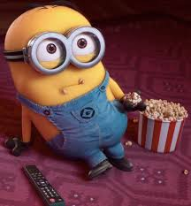

I have a couple of things that i do for fun.
One of my best hobbies and is playing rugby.Though there are many reasons why I play rugby, having fun is my main reason.
The aggression and intensity of the game without doubt makes the game interesting and keeps the adrenaline pumping
being both my hobby and skill.
Playing video games is another of my hobbies and unlike rugby it lures me into the fantasy world which makes
it even more fun. Also unlike rugby you get to have fun at the comfort of the couch.

What makes watching movies so interesting is the fact that it brings out different emotions depending on the scene.
The most fun part is that it allows you to fantasize and imagine what you could do in that world or situation.
Watching movies is also one of my hobbies.